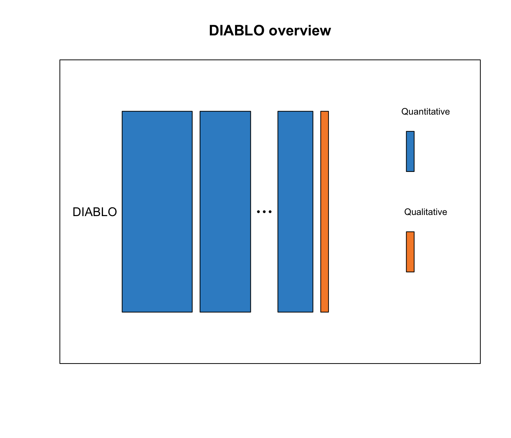
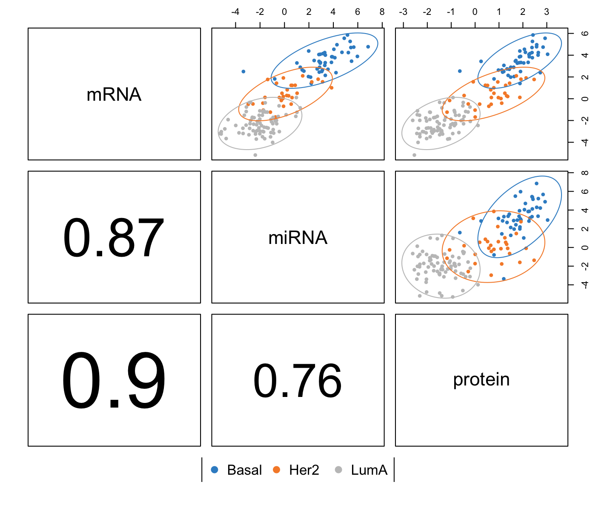
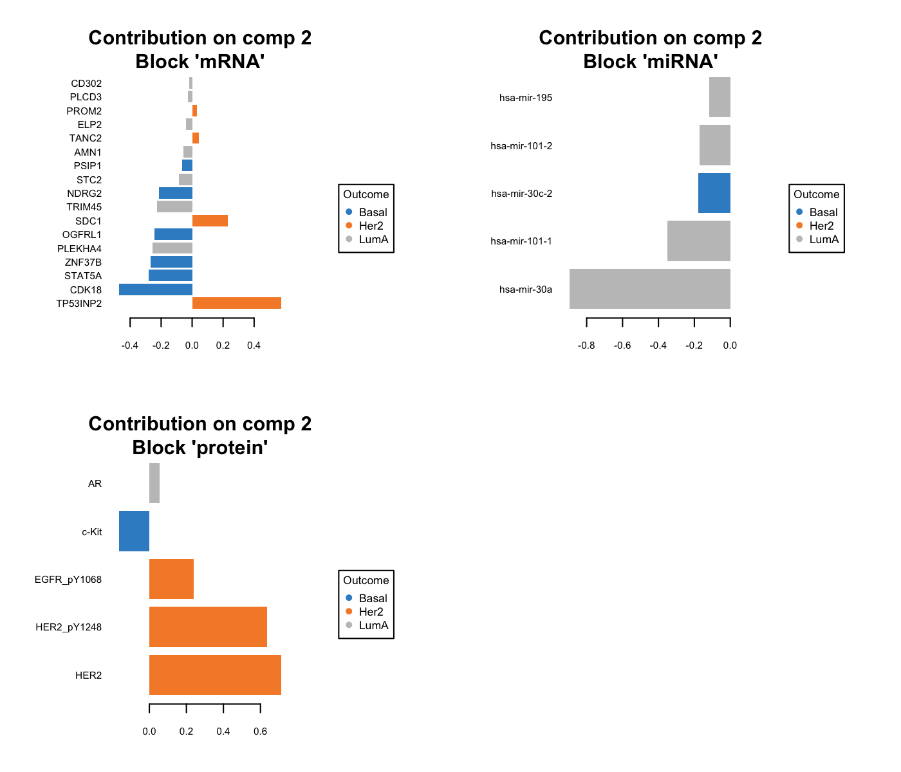

Chapter 6 Multi-block Discriminant Analysis with DIABLO

DIABLO is our new framework in mixOmics that extends PLS for multiple data sets integration and PLS-discriminant analysis. The acronyms stands for Data Integration Analysis for Biomarker discovery using a Latent cOmponents (Singh et al. 2017).
6.1 Biological question
I would like to identify a highly correlated multi-omics signature discriminating known groups of samples.
6.2 The breast.TCGA study
Human breast cancer is a heterogeneous disease in terms of molecular alterations, cellular composition, and clinical outcome. Breast tumours can be classified into several subtypes, according to levels of mRNA expression [Sorlie et al. (2001). Here we consider a subset of data generated by The Cancer Genome Atlas Network (Cancer Genome Atlas Network and others 2012). For the package, data were normalised and drastically prefiltered for illustrative purposes but DIABLO can handle larger data sets, see (Florian Rohart et al. 2017) Table 2. The data were divided into a training set with a subset of 150 samples from the mRNA, miRNA and proteomics data, and a test set including 70 samples, but only with mRNA and miRNA data (proteomics missing). The aim of this integrative analysis is to identify a highly correlated multi-omics signature discriminating the breast cancer subtypes Basal, Her2 and LumA.
The breast.TCGA is a list containing training and test sets of omics data data.train and data.test which both include:
miRNA: a data frame with 150 (70) rows and 184 columns in the training (test) data set for the miRNA expression levels.mRNA: a data frame with 150 (70) rows and 520 columns in the training (test) data set for the mRNA expression levels.protein: a data frame with 150 rows and 142 columns in the training data set only for the protein abundance.subtype: a factor indicating the breast cancer subtypes in the training (length of 150) and test (length of 70) sets.
More details can be found in ?breast.TCGA.
To illustrate DIABLO, we will integrate the expression levels of miRNA, mRNA and the abundance of proteins while discriminating the subtypes of breast cancer, then predict the subtypes of the test samples in the test set.
6.3 Principle of DIABLO
The core DIABLO method extends Generalised Canonical Correlation Analysis (Tenenhaus and Tenenhaus 2011), which contrary to what its name suggests, generalises PLS for multiple matching datasets, and the sparse sGCCA method (Tenenhaus et al. 2014). Starting from the R package RGCCA from Tenenhaus et al, we extended these methods for different types of analyses, including unsupervised N-integration (block.pls, block.spls) and supervised analyses (block.plsda, block.splsda).
The aim of N-integration with our sparse methods is to identify correlated (or co-expressed) variables measured on heterogeneous data sets which also explain the categorical outcome of interest (supervised analysis). The multiple data integration task is not trivial, as the analysis can be strongly affected by the variation between manufacturers or ’omics technological platforms despite being measured on the same biological samples. Before you embark on data integration, we strongly suggest individual or paired analyses with sPLS-DA and PLS to first understand the major sources of variation in each data set and to guide the integration process.
More methodological details can be found in (Singh et al. 2017).
6.4 Inputs and outputs
We consider as input a list X of data frames with \(n\) rows (the number of samples) and different number of variations in each data frame. Y is a factor vector of length \(n\) that indicates the class of each sample. Internally and similar to PLS-DA in Chapter 4 it will be coded as a dummy matrix.
DIABLO main outputs are:
A set of components, also called latent variables associated to each data set. There are as many components as the chosen dimension of DIABLO.
A set of loading vectors, which are coefficients assigned to each variable to define each component. Those coefficients indicate the importance of each variable in DIABLO. Importantly, each loading vector is associated to a particular component. Loading vectors are obtained so that the covariance between a linear combination of the variables from
X(the X-component) and fromY(the \(Y\)-component) is maximised.A list of selected variables from each data set and associated to each component if sparse DIABLO is applied.
6.5 Set up the data
We first set up the input data as a list of data frames X expression matrix and Y as a factor indicating the class membership of each sample. Each data frame in X should be named consistently to match with the keepX parameter.
We check that the dimensions are correct and match. We then set up arbitrarily the number of variables keepX that we wish to select in each data set and each component.
library(mixOmics)
data(breast.TCGA)
# extract training data and name each data frame
X <- list(mRNA = breast.TCGA$data.train$mrna,
miRNA = breast.TCGA$data.train$mirna,
protein = breast.TCGA$data.train$protein)
Y <- breast.TCGA$data.train$subtype
summary(Y)## Basal Her2 LumA
## 45 30 75list.keepX <- list(mRNA = c(16, 17), miRNA = c(18,5), protein = c(5, 5))6.6 Quick start
MyResult.diablo <- block.splsda(X, Y, keepX=list.keepX)
plotIndiv(MyResult.diablo)plotVar(MyResult.diablo)Similar to PLS (Chapter 5), DIABLO generates a pair of components, each associated to each data set. This is why we can visualise here 3 sample plots. As DIABLO is a supervised method, samples are represented with different colours depending on their known class.
The variable plot suggest some correlation structure between proteins, mRNA and miRNA. We will further customize these plots in Sections 6.7.1 and 6.7.2.
If you were to run block.splsda with this minimal code, you would be using the following default values:
ncomp = 2: the first two PLS components are calculated and are used for graphical outputs;scale = TRUE: data are scaled (variance = 1, strongly advised here for data integration);mode = "regression": by default a PLS regression mode should be used (see Section 5.8.6 for more details) .
We focused here on the sparse version as would like to identify a minimal multi-omics signature, however, the non sparse version could also be run with block.plsda:
MyResult.diablo2 <- block.plsda(X, Y)6.7 To go further
6.7.1 Customize sample plots
Here is an example of an improved plot, see also Section 4.7.1 for additional sources of inspiration.
plotIndiv(MyResult.diablo,
ind.names = FALSE,
legend=TRUE, cex=c(1,2,3),
title = 'BRCA with DIABLO')
6.7.2 Customize variable plots
Labels can be omitted in some data sets to improve readability. For example her we only show the name of the proteins:
plotVar(MyResult.diablo, var.names = c(FALSE, FALSE, TRUE),
legend=TRUE, pch=c(16,16,1))
6.7.3 Other useful plots for data integration
Several plots were added for the DIABLO framework.
6.7.3.1 plotDiablo
A global overview of the correlation structure at the component level can be represented with the plotDiablo function. It plots the components across the different data sets for a given dimension. Colours indicate the class of each sample.
plotDiablo(MyResult.diablo, ncomp = 1)
Here, we can see that a strong correlation is extracted by DIABLO between the mRNA and protein data sets. Other dimensions can be plotted with the argument comp.
6.7.3.2 circosPlot
The circos plot represents the correlations between variables of different types, represented on the side quadrants. Several display options are possible, to show within and between connexions between blocks, expression levels of each variable according to each class (argument line = TRUE). The circos plot is built based on a similarity matrix, which was extended to the case of multiple data sets from (González et al. 2012). A cutoff argument can be included to visualise correlation coefficients above this threshold in the multi-omics signature.
circosPlot(MyResult.diablo, cutoff=0.7)
6.7.3.3 cimDiablo
The cimDiablo function is a clustered image map specifically implemented to represent the multi-’omics molecular signature expression for each sample. It is very similar to a classic hierarchical clustering:
# minimal example with margins improved:
# cimDiablo(MyResult.diablo, margin=c(8,20))
# extended example:
cimDiablo(MyResult.diablo, color.blocks = c('darkorchid', 'brown1', 'lightgreen'), comp = 1, margin=c(8,20), legend.position = "right")6.7.3.4 plotLoadings
The plotLoadings function visualises the loading weights of each selected variables on each component (default is comp = 1) and each data set. The color indicates the class in which the variable has the maximum level of expression (contrib = "max") or minimum (contrib ="min"), on average (method="mean") or using the median (method ="median"). We only show the last plot here:
#plotLoadings(MyResult.diablo, contrib = "max")
plotLoadings(MyResult.diablo, comp = 2, contrib = "max")
6.7.3.5 Relevance networks
Another visualisation of the correlation between the different types of variables is the relevance network, which is also built on the similarity matrix (González et al. 2012). Each color represents a type of variable. A threshold can also be set using the argument cutoff.
See also Section 5.8.3.2 to save the graph and the different options, or ?network.
network(MyResult.diablo, blocks = c(1,2,3),
color.node = c('darkorchid', 'brown1', 'lightgreen'),
cutoff = 0.6, save = 'jpeg', name.save = 'DIABLOnetwork')6.8 Numerical outputs
6.8.1 Classification performance
Similar to what is described in Section 4.7.5 we use repeated cross-validation with perf to assess the prediction of the model. For this complex classification problems, often a centroid distance is suitable, see details in (Florian Rohart et al. 2017) Suppl. Material S1.
set.seed(123) # for reproducibility in this vignette
MyPerf.diablo <- perf(MyResult.diablo, validation = 'Mfold', folds = 5,
nrepeat = 10,
dist = 'centroids.dist')
#MyPerf.diablo # lists the different outputs
# Performance with Majority vote
#MyPerf.diablo$MajorityVote.error.rate6.8.2 AUC
An AUC plot per block is plotted using the function auroc see (Florian Rohart et al. 2017)for the interpretation of such output as the ROC and AUC criteria are not particularly insightful in relation to the performance evaluation of our methods, but can complement the statistical analysis.
Here we evaluate the AUC for the model that includes 2 components in the miRNA data set.

6.8.2.1 Prediction on an external test set
The predict function predicts the class of samples from a test set. In our specific case, one data set is missing in the test set but the method can still be applied. Make sure the name of the blocks correspond exactly.
# prepare test set data: here one block (proteins) is missing
X.test <- list(mRNA = breast.TCGA$data.test$mrna,
miRNA = breast.TCGA$data.test$mirna)
Mypredict.diablo <- predict(MyResult.diablo, newdata = X.test)
# the warning message will inform us that one block is missing
#Mypredict.diablo # list the different outputsThe confusion table compares the real subtypes with the predicted subtypes for a 2 component model, for the distance of interest:
confusion.mat <- get.confusion_matrix(
truth = breast.TCGA$data.test$subtype,
predicted = Mypredict.diablo$MajorityVote$centroids.dist[,2])
kable(confusion.mat)| predicted.as.Basal | predicted.as.Her2 | predicted.as.LumA | predicted.as.NA | |
|---|---|---|---|---|
| Basal | 15 | 1 | 0 | 5 |
| Her2 | 0 | 11 | 0 | 3 |
| LumA | 0 | 0 | 27 | 8 |
get.BER(confusion.mat)## [1] 0.24285716.8.3 Tuning parameters
For DIABLO, the parameters to tune are:
1 - The design matrix design indicates which data sets, or blocks should be connected to maximise the covariance between components, and to which extend. A compromise needs to be achieved between maximising the correlation between data sets (design value between 0.5 and 1) and maximising the discrimination with the outcome Y (design value between 0 and 0.5), see (Singh et al. 2017) for more details.
2 - The number of components to retain ncomp. The rule of thumb is usually \(K-1\) where \(K\) is the number of classes, but it is worth testing a few extra components.
3 - The number of variables to select on each component and on each data set in the list keepX.
For item 1, by default all data sets are linked as follows:
MyResult.diablo$design## mRNA miRNA protein Y
## mRNA 0 1 1 1
## miRNA 1 0 1 1
## protein 1 1 0 1
## Y 1 1 1 0The design can be changed as follows. By default each data set will be linked to the Y outcome.
MyDesign <- matrix(c(0, 0.1, 0.3,
0.1, 0, 0.9,
0.3, 0.9, 0),
byrow=TRUE,
ncol = length(X), nrow = length(X),
dimnames = list(names(X), names(X)))
MyDesign## mRNA miRNA protein
## mRNA 0.0 0.1 0.3
## miRNA 0.1 0.0 0.9
## protein 0.3 0.9 0.0MyResult.diablo.design <- block.splsda(X, Y, keepX=list.keepX, design=MyDesign)Items 2 and 3 can be tuned using repeated cross-validation, as we described in Chapter 4. A detailed tutorial is provided on our website in the different DIABLO tabs.
6.9 Additional resources
Additional examples are provided in example(block.splsda) and in our DIABLO tab in http://www.mixomics.org. Also have a look at (Singh et al. 2017)
6.10 FAQ
- When performing a multi-block analysis, how do I choose my design?
- We recommend first relying on some prior biological knowledge you may have on the relationship you expect to see between data sets. Conduct a few trials on a non sparse version
block.plsda, look at the classification performance withperfandplotDiablobefore you can decide on your final design.
- We recommend first relying on some prior biological knowledge you may have on the relationship you expect to see between data sets. Conduct a few trials on a non sparse version
- I have a small number of samples (n < 10), should I still tune
keepX?- It is probably not worth it. Try with a few
keepXvalues and look at the graphical outputs so see if they make sense. With a small \(n\) you can adopt an exploratory approach that does not require a performance assessment.
- It is probably not worth it. Try with a few
- During
tuneorperfthe code broke down (system computationally singular).- Check that the \(M\) value for your M-fold is not too high compared to \(n\) (you want \(n/M > 6 - 8\) as rule of thumb). Try leave-one-out instead with
validation = 'loo'and make surencompis not too large as you are running on empty matrices!
- Check that the \(M\) value for your M-fold is not too high compared to \(n\) (you want \(n/M > 6 - 8\) as rule of thumb). Try leave-one-out instead with
- My tuning step indicated the selection of only 1 miRNA…
- Choose a grid of keepX values that starts at a higher value (e.g. 5). The algorithm found an optimum with only one variable, either because it is highly discriminatory or because the data are noisy, but it does not stop you from trying for more.
- My Y is continuous, what can I do?
- You can perform a multi-omics regression with
block.spls. We have not found a way yet to tune the results so you will need to adopt an exploratory approach or back yourself up with down stream analyses once you have identified a list of highly correlated features.
- You can perform a multi-omics regression with
References
Singh, Amrit, B Gautier, C Shannon, F Rohart, M Vacher, Tebbutt S, and K-A Lê Cao. 2017. “DIABLO: Identifying Key Molecular Drivers from Multi-Omic Assays, an Integrative Approach.” bioRxiv. Cold Spring Harbor Labs Journals. https://www.biorxiv.org/content/early/2018/03/20/067611.
Sorlie, Therese, Charles M Perou, Robert Tibshirani, Turid Aas, Stephanie Geisler, Hilde Johnsen, Trevor Hastie, et al. 2001. “Gene Expression Patterns of Breast Carcinomas Distinguish Tumor Subclasses with Clinical Implications.” Proceedings of the National Academy of Sciences 98 (19). National Acad Sciences: 10869–74.
Cancer Genome Atlas Network, and others. 2012. “Comprehensive Molecular Portraits of Human Breast Tumours.” Nature 490 (7418). Nature Publishing Group: 61–70.
Rohart, Florian, Benoit Gautier, Amrit Singh, and Kim-Anh Le Cao. 2017. “MixOmics: An R Package for ‘Omics Feature Selection and Multiple Data Integration.” PLoS Computational Biology 13 (11). Cold Spring Harbor Labs Journals.
Tenenhaus, Arthur, and Michel Tenenhaus. 2011. “Regularized Generalized Canonical Correlation Analysis.” Psychometrika 76 (2). Springer: 257–84.
Tenenhaus, Arthur, Cathy Philippe, Vincent Guillemot, Kim-Anh Le Cao, Jacques Grill, and Vincent Frouin. 2014. “Variable Selection for Generalized Canonical Correlation Analysis.” Biostatistics. Biometrika Trust, kxu001.
González, Ignacio, Kim-Anh Lê Cao, Melissa J Davis, Sébastien Déjean, and others. 2012. “Visualising Associations Between Paired ’Omics’ Data Sets.” BioData Mining 5 (1). BioMed Central Ltd: 19.